일반기계기사 (2019-04-27 기출문제)
1과목: 재료역학
1. 원형축(바깥지름 d)을 재질이 같은 속이 빈 원형축(바깥지름 d, 안지름 d/2)으로 교체하였을 경우 받을 수 있는 비틀림 모멘트는 몇 % 감소하는가?
- 6.25
- 8.25
- 25.6
- 52.6
(정답률: 63%)

2. 포아송의 비 0.3, 길이 3m인 원형단면의 막대에 축방향의 하중이 가해진다. 이 막대의 표면에 원주방향으로 부착된 스트레인 게이지가 –1.5 ×10-4 의 변형률을 나타낼 때, 이 막대의 길이 변화로 옳은 것은?
- 0.135 mm 압축
- 0.135 mm 인장
- 1.5 mm 압축
- 1.5 mm 인장
(정답률: 51%)
3. 안지름이 80mm, 바깥지름이 90mm 이고 길이가 3m인 좌굴 하중을 받는 파이프 압축 부재의 세장비는 얼마 정도인가?
- 100
- 110
- 120
- 130
(정답률: 63%)
4. 지름 30mm의 환봉 시험편에서 표점거리를 10mm로 하고 스트레인 게이지를 부착하여 신장을 측정한 결과 인장하중 25kN에서 신장 0.0418 mm가 측정되었다. 이때의 지름은 29.97mm 이었다. 이 재료의 포아송 비(ν)는?
- 0.239
- 0.287
- 0.0239
- 0.0287
(정답률: 65%)
5. 다음과 같은 단면에 대한 2차 모멘트 Iz는 약 몇 mm4 인가?
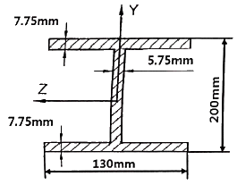
- 18.6 × 106
- 21.6 × 106
- 24.6 × 106
- 27.6 × 106
(정답률: 66%)
6. 지름 4cm, 길이 3m 인 선형 탄성 원형 축이 800rpm으로 3.6kW를 전달할 때 비틀림 각은 약 몇 도(°)인가? (단, 전단 탄성계수는 84 GPa 이다.)
- 0.0085°
- 0.35°
- 0.48°
- 5.08°
(정답률: 66%)
7. 그림과 같이 한쪽 끝을 지지하고 다른 쪽을 고정한 보가 있다. 보의 단면은 직경 10cm의 원형이고 보의 길이는 L 이며, 보의 중앙에 2094N의 집중하중 P가 작용하고 있다. 이 때 보에 작용하는 최대굽힘응력이 8MPa 라고 한다면, 보의 길이 L은 약 몇 m 인가?
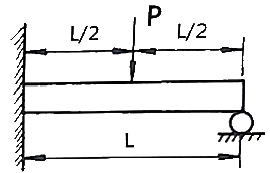
- 2.0
- 1.5
- 1.0
- 0.7
(정답률: 41%)
8. 다음과 같이 길이 L인 일단고정, 타단지지보에 등분포 하중 ω가 작용할 때, 고정단 A로부터 전단력이 0이 되는 거리(X)는 얼마인가?
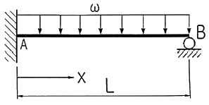
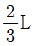
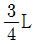
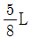
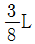
(정답률: 60%)
9. 두께 10mm의 강판에 지름 23mm의 구멍을 만드는데 필요한 하중은 약 몇 kN인가? (단, 강판의 전단응력 τ = 750 MPa 이다.)
- 243
- 352
- 473
- 542
(정답률: 63%)
10. 그림과 같은 구조물에서 점 A에 하중 P = 50 kN 이 작용하고 A점에서 오른편으로 F = 10 kN 이 작용할 때 평형위치의 변위 x는 몇 cm 인가? (단, 스프링탄성계수(k) = 5 kN/cm 이다.)
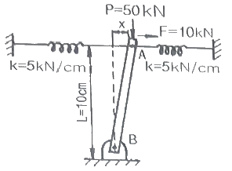
- 1
- 1.5
- 2
- 3
(정답률: 39%)
11. 직육면체가 일반적인 3축 응력 σx, σy, σz를 받고 있을 때 체적 변형률 εv는 대략 어떻게 표현되는가?
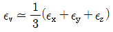
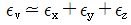
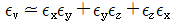
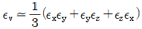
(정답률: 57%)
12. 다음 그림과 같이 C점에 집중하중 P가 작용하고 있는 외팔보의 자유단에서 경사각 θ를 구하는 식은? (단, 보의 굽힘 가성 EI는 일정하고, 자중은 무시한다.)
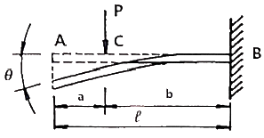
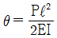
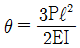
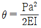
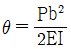
(정답률: 59%)
13. 단면적이 7cm2이고, 길이가 10m인 환봉의 온도를 10℃ 올렸더니 길이가 1mm 증가했다. 이 환봉의 열팽창계수는?
- 10-2/℃
- 10-3/℃
- 10-4/℃
- 10-5/℃
(정답률: 53%)
14. 단면 20cm × 30cm, 길이 6m의 목재로 된 단순보의 중앙에 20kN의 집중하중이 작용할 때, 최대 처짐은 약 몇 cm 인가? (단, 세로탄성계수 E = 10 GPa 이다.)
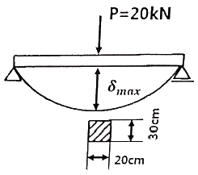
- 1.0
- 1.5
- 2.0
- 2.5
(정답률: 66%)
15. 끝이 닫혀있는 얇은 벽의 둥근 원통형 압력용기에 내압 p가 작용한다. 용기의 벽의 안쪽 표면 응력상태에서 일어나는 절대 최대 전단응력을 구하면? (단, 탱크의 반경 = r, 벽 두께 = t 이다.)
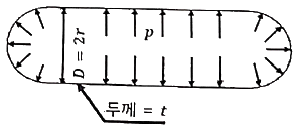
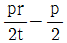
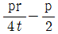
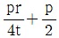
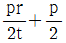
(정답률: 38%)
16. 길이 3m의 직사각형 단면 b × h = 5cm × 10cm을 가진 외팔보에 w의 균일분포하중이 작용하여 최대굽힘응력 500 N/cm2이 발생할 때, 최대전단응력은 약 몇 N/cm2 인가?
- 20.2
- 16.5
- 8.3
- 5.4
(정답률: 44%)
17. 그림에서 C점에서 작용하는 굽힘모멘트는 몇 N·m 인가?
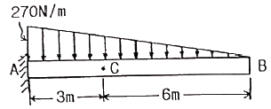
- 270
- 810
- 540
- 1080
(정답률: 38%)
18. 그림과 같은 형태로 분포하중을 받고 있는 단순지지보가 있다. 지지점 A에서의 반력 RA는 얼마인가? (단, 분포하중
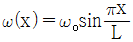
이다.)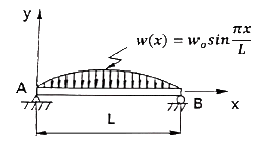
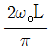
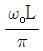
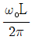
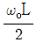
(정답률: 37%)
19. 그림과 같은 평면 응력 상태에서 최대 주응력은 약 몇 MPa 인가? (단, σx = 500 MPa, σy = -300 MPa, τxy = -300 MPa 이다.)
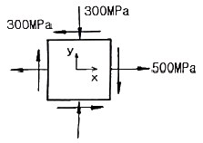
- 500
- 600
- 700
- 800
(정답률: 61%)
20. 강재 중공축이 25 kN·m의 토크를 전달한다. 중공축의 길이가 3m이고, 이 때 축에 발생하는 최대전단응력이 90 MPa 이며, 축에 발생된 비틀림각이 2.5° 라고 할 때 축의 외경과 내경을 구하면 각각 약 몇 mm 인가? (단, 축 재료의 전단탄성계수는 85 GPa 이다.)
- 146, 124
- 136, 114
- 140, 132
- 133, 112
(정답률: 51%)
2과목: 기계열역학
21. 어떤 사이클이 다음 온도(T)-엔트로피(s) 선도와 같을 때 작동 유체에 주어진 열량은 약 몇 kJ/kg 인가?
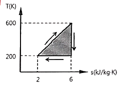
- 4
- 400
- 800
- 1600
(정답률: 62%)
22. 압력이 100 kPa 이며 온도가 25℃인 방의 크기가 240 m3 이다. 이 방에 들어있는 공기의 질량은 약 몇 kg 인가? (단, 공기는 이상기체로 가정하며, 공기의 기체상수는 0.287 kJ/(kg·K) 이다.)
- 0.00357
- 0.28
- 3.57
- 280
(정답률: 64%)
23. 용기에 부착된 압력계에 읽힌 계기압력이 150 kPa 이고 국소대기압이 100 kPa 일 때 용기 안의 절대압력은?
- 250 kPa
- 150 kPa
- 100 kPa
- 50 kPa
(정답률: 68%)
24. 수증기가 정상과정으로 40 m/s 의 속도로 누즐에 유입되어 275 m/s 로 빠져나간다. 유입되는 수증기의 엔탈피는 3300kJ/kg, 노즐로부터 발생되는 열손실은 5.9 kJ/kg 일 때 노즐 출구에서의 수증기 엔탈피는 약 몇 kJ/kg 인가?
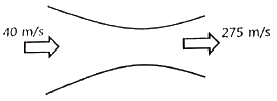
- 3257
- 3024
- 2795
- 2612
(정답률: 53%)
25. 클라우지우스(Clausius) 부등식을 옳게 표현한 것은? (단, T는 절대 온도, Q는 시스템으로 공급된 전체 열량을 표시한다.)
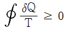
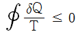
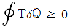
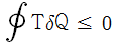
(정답률: 67%)
26. 500W 의 전열기로 4kg의 물을 20℃에서 90℃까지 가열하는데 몇 분이 소요되는가? (단, 전열기에서 열은 전부 온도 상승에 사용되고 물의 비열은 4180 J/(kg·K) 이다.)
- 16
- 27
- 39
- 45
(정답률: 64%)
27. R-12를 작동 유체로 사용하는 이상적인 증가압축 냉동 사이클이 있다. 여기서 증발기 출구 엔탈피는 229 kJ/kg, 팽창밸브 출구 엔탈피는 81 kJ/kg, 응축기 입구 엔탈피는 255 kJ/kg 일 때 이 냉동기의 성적계수는 약 얼마인가?
- 4.1
- 4.9
- 5.7
- 6.8
(정답률: 55%)
28. 보일러에 물(온도 20℃, 엔탈피 84 kJ/kg)이 유입되어 600 kPa 의 포화증기(온도 159℃, 엔탈피 2757 kJ/kg) 상태로 유출된다. 물의 질량유량이 300kg/h 이라면 보일러에 공급된 열량은 약 몇 kW인가?
- 121
- 140
- 223
- 345
(정답률: 52%)
29. 가역 과정으로 실린더 안의 공기를 50 kPa, 10℃ 상태에서 300 kPa 까지 압력(P)과 체적(V)의 관계가 다음과 같은 과정으로 압축할 때 단위 질량당 방출되는 열량은 약 몇 kJ/kg 인가? (단, 기체 상수는 0.287 kJ/(kg·K) 이고, 정적비열은 0.7 kJ/(kg·K) 이다.)
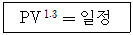
- 17.2
- 37.2
- 57.2
- 77.2
(정답률: 39%)
30. 효율이 40%인 열기관에서 유효하게 발생되는 동력이 110 kW 이라면 주위로 방출되는 총 열량은 약 몇 kW 인가?
- 375
- 165
- 135
- 85
(정답률: 58%)
31. 화씨 온도가 86°F 일 때 섭씨 온도는 몇 ℃ 인가?
- 30
- 45
- 60
- 75
(정답률: 59%)
32. 압력이 0.2 MPa 이고, 초기 온도가 120℃인 1kg의 공기를 압축비 18로 가역 단열 압축하는 경우 최종온도는 약 몇 ℃ 인가? (단, 공기는 비열비가 1.4 인 이상기체이다.)
- 676℃
- 776℃
- 876℃
- 976℃
(정답률: 41%)
33. 그림과 같이 실린더 내의 공기가 상태 1에서 상태 2로 변화할 때 공기가 한 일은? (단, P는 압력, V는 부피를 나타낸다.)
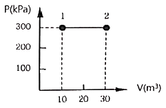
- 30 kJ
- 60 kJ
- 3000 kJ
- 6000 kJ
(정답률: 68%)
34. 등엔트로피 효율이 80%인 소형 공기터빈의 출력이 270 kJ/kg 이다. 입구 온도는 600K 이며, 출구 압력은 100 kPa 이다. 공기의 정압비열은 1.004 kJ/(kg·K), 비열비는 1.4 일 때, 입구 압력(kPa)은 약 몇 kPa 인가? (단, 공기는 이상기체로 간주한다.)
- 1984
- 1842
- 1773
- 1621
(정답률: 26%)
35. 100℃와 50℃ 사이에서 작동하는 냉동기로 가능한 최대성능계수(COP)는 약 얼마인가?
- 7.46
- 2.54
- 4.25
- 6.46
(정답률: 62%)
36. 카르노 사이클로 작동되는 열기관이 고온체에서 100 kJ의 열을 받고 있다. 이 기관의 열효율이 30% 라면 방출되는 열량은 약 몇 kJ 인가?
- 30
- 50
- 60
- 70
(정답률: 58%)
37. Van der Waals 상태 방정식은 다음과 같이 나타낸다. 이 식에서
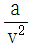
, b는 각각 무엇을 의미하는 것인가? (단, P는 압력, v는 비체적, R는 기체상수, T는 온도를 나타낸다.)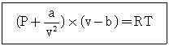
- 분자간의 작용 인력, 분자 내부 에너지
- 분가잔의 작용 인력, 기체 분자들이 차지하는 체적
- 분자 자체의 질량, 분자 내부 에너지
- 분자 자체의 질량, 기체 분자들이 차지하는 체적
(정답률: 55%)
38. 어떤 시스템에서 유체는 외부로부터 19 kJ의 일을 받으면서 167 kJ의 열을 흡수하였다. 이 때 내부에너지의 변화는 어떻게 되는가?
- 148 kJ 상승한다.
- 186 kJ 상승한다.
- 148 kJ 감소한다.
- 186 kJ 감소한다.
(정답률: 57%)
39. 체적이 500cm3 인 풍선에 압력 0.1 MPa, 온도 288K의 공기가 가득 채워져 있다. 압력이 일정한 상태에서 풍선 속 공기 온도가 300K로 상승했을 때 공기에 가해진 열량은 약 얼마인가? (단, 공기의 정압비열이 1.0⑤ kJ/(kg·K), 기체상수가 0.287 kJ/(kg·K) 인 이상기체로 간주한다.)
- 7.3 J
- 7.3 kJ
- 14.6 J
- 14.6 kJ
(정답률: 41%)
40. 어떤 시스템에서 공기가 초기에 290K 에서 330K로 변화하였고, 이 때 압력은 200 kPa에서 600 kPa 로 변화하였다. 이 때 단위 질량당 엔트로피 변화는 약 몇 kJ/(kg·K) 인가? (단, 공기는 정압비열이 1.006 kJ/(kg·K)이고, 기체상수가 0.287 kJ/(kg·K)인 이 상기체로 간주한다.)
- 0.445
- -0.445
- 0.185
- -0.185
(정답률: 38%)
3과목: 기계유체역학
41. 분수에서 분출되는 물줄기 높이를 2배로 올리려면 노즐 입구에서의 게이지 압력을 약 몇 배로 올려야 하는가? (단, 노즐 입구에서의 동압은 무시한다.)
- 1.414
- 2
- 2.828
- 4
(정답률: 56%)
42. 수면의 높이 차이가 10m인 두 개의 호수사이에 손실수두가 2m인 관로를 통해 펌프로 물을 양수할 때 3kW 의 동력이 필요하다면 이 때 유량은 약 몇 L/s 인가?
- 18.4
- 25.5
- 32.3
- 45.8
(정답률: 50%)
43. 체적탄성계수가 2×109 N/m2 인 유체를 2% 압축하는데 필요한 압력은?
- 1 GPa
- 10 MPa
- 4 GPa
- 40 MPa
(정답률: 61%)
44. 정지된 액체 속에 잠겨있는 평면이 받는 압력에 의해 발생하는 합력에 대한 설명으로 옳은 것은?
- 크기가 액체의 비중량에 반비례한다.
- 크기는 도심에서의 압력에 전체면적을 곱한 것과 같다.
- 경사진 평면에서의 작용점은 평면의 도심과 일치한다.
- 수직평면의 경우 작용점이 도심보다 위쪽에 있다.
(정답률: 63%)
45. 경사가 30°인 수로에 물이 흐르고 있다. 유속이 12 m/s 로 흐림이 균일하다고 가정하며 연직방향으로 측정한 수심이 60cm 이다. 수로의 폭을 1m로 한다면 유량은 약 몇 m3/s 인가?
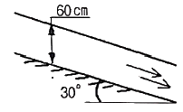
- 5.87
- 6.24
- 6.82
- 7.26
(정답률: 47%)
46. 일반적으로 뉴턴 유체의 온도 상승에 따른 액체의 점성계수 변화에 대한 설명으로 옳은 것은?
- 분자의 무질서한 운동이 커지므로 점성계수가 증가한다.
- 분자의 무질서한 운동이 커지므로 점성계수가 감소한다.
- 분자간의 결합력이 약해지므로 점성계수가 증가한다.
- 분자간의 결합력이 약해지므로 점성계수가 감소한다.
(정답률: 54%)
47. 경계층 밖에서 퍼텐셜 흐름의 속도가 10 m/s 일 때, 경계층의 두께는 속도가 얼마일 때의 값으로 잡아야 하는가? (단, 일반적으로 정의하는 경계층 두께를 기준으로 삼는다.)
- 10 m/s
- 7.9 m/s
- 8.9 m/s
- 9.9 m/s
(정답률: 59%)
48. 점성계수(μ)가 0.0⑤ Pa·s 인 유체가 수평으로 놓인 안지름이 4cm인 곧은 관을 30 cm/s의 평균속도로 흘러가고 있다. 흐름 상태가 층류일 때 수평 길이 800 cm 사이에서의 압력강하(Pa)는?
- 120
- 240
- 360
- 480
(정답률: 55%)
49. 다음 중 유선(stream line)을 가장 올바르게 설명한 것은?
- 에너지가 같은 점을 이은 선이다.
- 유체 입자가 시간에 따라 움직인 궤적이다.
- 유체 입자의 속도벡터와 접선이 되는 가상 곡선이다.
- 비정상유동 때의 유동을 나타내는 곡선이다.
(정답률: 57%)
50. 평행한 평판 사이의 층류 흐름을 해석하기 위해서 필요한 무차원수와 그 의미를 바르게 나타낸 것은?
- 레이놀즈 수 = 관성력 / 점성력
- 레이놀즈 수 = 관성력 / 탄성력
- 프루드 수 = 중력 / 관성력
- 프루드 수 = 관성력 / 점성력
(정답률: 65%)
51. 물의 지름이 0.4 m 인 노즐을 통해 20 m/s 의 속도로 맞은편 수직벽에 수평으로 분사된다. 수직벽에는 지름 0.2 m 의 구멍이 있으며 뚤린 구멍으로 유량의 25%가 흘러나가고 나머지 75%는 반경 방향으로 균일하게 유출된다. 이때 물에 의해 벽면이 받는 수평 방향의 힘은 약 몇 kN 인가?
- 0
- 9.4
- 18.9
- 37.7
(정답률: 40%)
52. 동점성계수가 1.5×10-5 m2/s 인 공기 중에서 30 m/s의 속도로 비행하는 비행기의 모형을 만들어, 동점성계수가 1.0×10-6 m2/s 인 물속에서 6m/s의 속도로 모형시험을 하려 한다. 모형(Lm)과 실형(Lp)의 길이비(Lm/Lp)를 얼마로 해야 되는가?
- 1/75
- 1/15
- 1/5
- 1/3
(정답률: 60%)
53. 관속에 흐르는 물의 유속을 측정하기 위하여 삽입한 피토 정압관에 비중이 3인 액체를 사용하는 마노미터를 연결하여 측정한 결과 액주의 높이 차이가 10cm로 나타났다면 유속은 약 몇 m/s 인가?
- 0.99
- 1.40
- 1.98
- 2.43
(정답률: 34%)
54. 바닷물 밀도는 수면에서 1025 kg/m3 이고 깊이 100m 마다 0.5 kg/m3 씩 증가한다. 깊이 1000m에서 압력은 계기압력으로 약 몇 kPa 인가?
- 9560
- 10080
- 10240
- 10800
(정답률: 52%)
55. 높이가 0.7m, 폭이 1.8m인 직사각형 덕트에 유체가 가득차서 흐른다. 이때 수력직경은 약 몇 m인가?
- 1.01
- 2.02
- 3.14
- 5.04
(정답률: 25%)
56. 동점성계수가 1.5×10-5 m2/s 인 유체가 안지름이 10cm인 관 속을 흐르고 있을 때 층류 임계속도(cm/s)는? (단, 층류 임계레이놀즈수는 2100 이다.)(오류 신고가 접수된 문제입니다. 반드시 정답과 해설을 확인하시기 바랍니다.)
- 24.7
- 31.5
- 43.6
- 52.3
(정답률: 62%)
57. 다음 중 유체의 속도구배와 전단응력이 선형적으로 비례하는 유체를 설명한 가장 알맞은 용어는 무엇인가?
- 점성유체
- 뉴턴유체
- 비압축성 유체
- 정상유동 유체
(정답률: 56%)
58. 속도 포텐셜이 ø = x2 - y2인 2차원 유동에 해당하는 유동함수로 가장 옳은 것은?
- x2 + y2
- 2xy
- -3xy
- 2x(y-1)
(정답률: 46%)
59. 물을 담은 그릇을 수평방향으로 4.2 m/s2으로 운동시킬 때 물은 수평에 대하여 약 몇 도(°) 기울어지겠는가?
- 18.4°
- 23.2°
- 35.6°
- 42.9°
(정답률: 56%)
60. 몸무게가 750N인 조종사가 지름 5.5m의 낙하산을 타고 비행기에서 탈출하였다. 항력계수가 1.0이고, 낙하산의 무게를 무시한다면 조종사의 최대 종속도는 약 몇 m/s가 되는가? (단, 공기의 밀도는 1.2 kg/m3 이다.)
- 7.25
- 8.00
- 5.26
- 10.04
(정답률: 56%)
4과목: 기계재료 및 유압기기
61. 다음 중 비중이 가장 작고, 항공기 부품이나 전자 및 전기용 제품의 케이스 용도로 사용되고 있는 합금 재료는?
- Ni 합금
- Cu 합금
- Pb 합금
- Mg 합금
(정답률: 68%)
62. 다음의 조직 중 경도가 가장 높은 것은?
- 펄라이트(pearlite)
- 페라이트(ferrite)
- 마텐자이트(martensite)
- 오스테나이트(austenite)
(정답률: 68%)
63. 강의 열처리 방법 중 표면경화법에 해당하는 것은?
- 마퀜칭
- 오스포밍
- 침탄질화법
- 오스템퍼링
(정답률: 64%)
64. 칼로라이징은 어떤 원소를 금속표면에 확산 침투시키는 방법인가?
- Zn
- Si
- Al
- Cr
(정답률: 63%)
65. Fe-C 평형상태도에서 온도가 가장 낮은 것은?
- 공석점
- 포정점
- 공정점
- Fe의 자기변태점
(정답률: 57%)
66. 열경화성 수지에 해당하는 것은?
- ABS수지
- 에폭시수지
- 폴리아미드
- 염화비닐수지
(정답률: 58%)
67. 다음 중 반발을 이용하여 경도를 측정하는 시험법은?
- 쇼어경도시험
- 마이어경도시험
- 비커즈경도시험
- 로크웰경도시험
(정답률: 62%)
68. 구리(Cu)합금에 대한 설명 중 옳은 것은?
- 청동은 Cu + Zn 합금이다.
- 베릴륨 청동은 시효경화성이 강력한 Cu 합금이다.
- 애드미럴티 황동은 6-4황동에 Sb을 첨가한 합금이다.
- 네이벌 황동은 7-3황동에 Ti을 첨가한 합금이다.
(정답률: 39%)
69. 면심입방격자(FCC)의 단위격자 내에 원자수는 몇 개인가?
- 2개
- 4개
- 6개
- 8개
(정답률: 61%)
70. 합금주철에서 특수합금 원소의 영향을 설명한 것 중 틀린 것은?
- Ni은 흑연화를 방지한다.
- Ti은 강한 탈산제이다.
- V은 강한 흑연화 방지 원소이다.
- Cr은 흑연화를 방지하고, 탄화물은 안정화한다.
(정답률: 44%)
71. 그림과 같은 유압 기호가 나타내는 명칭은?
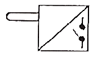
- 전자 변환기
- 압력 스위치
- 리밋 스위치
- 아날로그 변환기
(정답률: 52%)
72. 부하의 하중에 의한 자유낙하를 방지하기 위해 배압(back pressure)을 부여하는 밸브는?
- 체크 밸브
- 감압 밸브
- 릴리프 밸브
- 카운터 밸런스 밸브
(정답률: 66%)
73. 어큐물레이터(accumulator)의 역할에 해당하지 않는 것은?
- 갑작스런 충격압력을 막아 주는 역할을 한다.
- 축척된 유압에너지의 방출 사이클 시간을 연장한다.
- 유압 회로 중 오일 누설 등에 의한 압력강하를 보상하여 준다.
- 유압 펌프에서 발생하는 맥동을 흡수하여 진동이나 소음을 방지한다.
(정답률: 53%)
74. 유압실린더에서 피스톤 로드가 부하를 미튼 힘이 50 kN, 피스톤 속도가 5 m/min 인 경우 실린더 내경이 8cm 이라면 소요동력은 약 몇 kW 인가? (단, 펀로드형 실린더이다.)
- 2.5
- 3.17
- 4.17
- 5.3
(정답률: 57%)
75. 액추에이터의 공급 쪽 관로에 설정된 바이패스 관로의 흐름을 제어함으로써 속도를 제어하는 회로는?
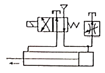
- 배압 회로
- 미터 인 회로
- 플립 플롭 회로
- 블리드 오프 회로
(정답률: 42%)
76. 유압 작동유에서 요구되는 특성이 아닌 것은?
- 인화점이 낮고, 증기 분리압이 클 것
- 유동성이 좋고, 관로 저항이 적을 것
- 화학적으로 안정될 것
- 비압축성일 것
(정답률: 67%)
77. 유압 시스템의 배관계통과 시스템 구성에 사용되는 유압기기의 이물질을 제거하는 작업으로 유랫동안 사용하지 않던 설비의 운전을 다시 시작하였을 때나 유압 기계를 처음 설치하였을 때 수행하는 작업은?
- 펌핑
- 플러싱
- 스위핑
- 클리닝
(정답률: 60%)
78. 유동하고 있는 액체의 압력이 국부적으로 저하되어, 증기나 함유 기체를 포함하는 기포가 발생하는 현상은?
- 캐비테이션 현상
- 채터링 현상
- 서징 현상
- 역류 현상
(정답률: 68%)
79. 다음 기어펌프에서 발생하는 폐입 현상을 방지하기 위한 방법으로 가장 적절한 것은?
- 오일을 보충한다.
- 베인을 교환한다.
- 베어링을 교환한다.
- 릴리프 홈이 적용된 기어를 사용한다.
(정답률: 61%)
80. 다음 중 오일의 점성을 이용하여 진동을 흡수하거나 충격을 완화 시킬 수 있는 유압응용장치는?
- 압력계
- 토크 컨버터
- 쇼크 업소버
- 진동개폐밸브
(정답률: 64%)
5과목: 기계제작법 및 기계동력학
81. 20 m/s의 같은 속력으로 달리던 자동차 A, B가 교차로에서 직각으로 충돌하였다. 충돌 직후 자동차 A의 속력은 약 몇 m/s인가? (단, 자동차 A, B의 질량은 동일하며 반발계수는 0.7, 마찰은 무시한다.)
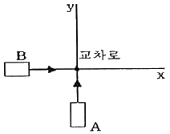
- 17.3
- 18.7
- 19.2
- 20.4
(정답률: 29%)
82. 80 rad/s로 회전하던 세탁기의 전원을 끈 후 20초가 경과하여 정지하였다면 세탁기가 정지할 때까지 약 몇 바퀴를 회전하였는가?
- 127
- 254
- 542
- 7620
(정답률: 25%)
83. 시간 t에 따른 변위 x(t)가 다음과 같은 관계식을 가질 때 가속도 a(t)에 대한 식으로 옳은 것은?
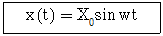
- a(t) = w2 X0 sin wt
- a(t) = w2 X0 cos wt
- a(t) = -w2 X0 sin wt
- a(t) = -w2 X0 cos wt
(정답률: 58%)
84. 체중이 600N인 사람이 타고 있는 무게 5000N의 엘리베이터가 200m의 케이블에 매달려 있다. 이 케이블을 모두 감아올리는데 필요한 일은 몇 kJ 인가?
- 1120
- 1220
- 1320
- 1420
(정답률: 57%)
85.
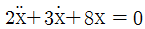
으로 주어진 진동계에서 대수 감소율(lograrithmic decrement)은?- 1.28
- 1.58
- 2.18
- 2.54
(정답률: 37%)
86. 다음 그림은 물체 운동의 v-t 선도(속도-시간선도)이다. 그래프에서 시간 t1에서의 접선의 기울기는 무엇을 나타내는가?
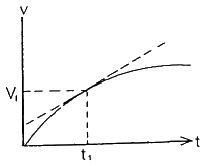
- 변위
- 속도
- 가속도
- 총 움직인 거리
(정답률: 64%)
87. 달 표면에서 중력 가속도는 지구 표면에서의 1/6 이다. 지구 표면에서 주기가 T인 단전자를 달로 가져가면, 그 주기는 어떻게 변하는가?
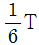
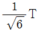
- 6T
(정답률: 34%)
88. 감쇠비 ζ가 일정할 때 전달률을 1보다 작게 하려면 진동수비는 얼마의 크기를 가지고 있어야 하는가?
- 1보다 작아야 한다.
- 1보다 커야 한다.
- √2 보다 작아야 한다.
- √2 보다 커야 한다.
(정답률: 56%)
89. y축 방향으로 움직이는 질량 m인 질점이 그림과 같은 위치에서 v의 속도를 갖고 있다. O점에 대한 각운동량은 얼마인가? (단, a, b, c는 원점에서 질점까지의 x, y, z방향의 거리이다.)
(정답률: 22%)
90. 질량 50kg의 상자가 넘어기자 않도록 하면서 질량 10kg의 수레에 가할 수 있는 힘 P의 최댓값은 얼마인가? (단, 상자는 수레 위에서 미끄러지지 않는다고 가정한다.)
- 292 N
- 392 N
- 492 N
- 592 N
(정답률: 29%)
91. 레이저(laser) 가공에 대한 특징으로 틀린 것은?
- 밀도가 높은 단색성과 평행도가 높은 지향성을 이용한다.
- 가공물에 빛을 쏘이면 순각적으로 일부분이 가열되어, 용해되거나 증발되는 원리이다.
- 초경합금, 스테인리스강의 가공은 불가능한 단점이 있다.
- 유리, 플라스틱 판의 절단이 가능하다.
(정답률: 58%)
92. 다음 표는 고속도강의 함유량 표기에서 “18”의 의미는?
- 탄소의 함유량
- 텅스텐의 함유량
- 크롬의 함유량
- 바나듐의 함유량
(정답률: 51%)
93. 피복 아크 용접에서 피복제의 역할로 틀린 것은?
- 아크를 안정시킨다.
- 용착금속을 보호한다.
- 용착금속의 급랭을 방지한다.
- 용착금속의 흐름을 억제한다.
(정답률: 63%)
94. 절삭가공을 할 때 절삭온도를 측정하는 방법으로 사용하지 않는 것은?
- 부식을 이용하는 방법
- 복사고온계를 이용하는 방법
- 열전대(thermo couple)에 의한 방법
- 칼로리미터(calorimeter)에 의한 방법
(정답률: 65%)
95. 선반가공에서 직경 60 mm 길이 100 mm의 탄소강 재료 환봉을 초경바이트를 사용하여 1회 절삭 시 가공시간은 약 몇 초인가? (단, 절삭깊이 1.5 mm, 절삭속도 150 m/min, 이송은 0.2 mm/rev 이다.)
- 38초
- 42초
- 48초
- 52초
(정답률: 29%)
96. 300mm×500mm 인 주철 주물을 만들 때, 필요한 주입 추의 무게는 약 몇 kg 인가? (단, 쇳물 아궁이 높이가 120mm, 주물 미도는 7200 kg/m3 이다.)
- 129.6
- 149.6
- 169.6
- 189.6
(정답률: 48%)
97. 프레스 작업에서 전단가공이 아닌 것은?
- 트리밍(trimming)
- 컬링(curling)
- 셰이빙(shaving)
- 블랭킹(blanking)
(정답률: 51%)
98. 다음 중 직접 측정기가 아닌 것은?
- 측장기
- 마이크로미터
- 버니어캘리퍼스
- 공기 마이크로미터
(정답률: 63%)
99. 스프링 백(spring back)에 대한 설명으로 틀린 것은?
- 경도가 클수록 스프링 백의 변화도 커진다.
- 스프링 백의 양은 가공조건에 의해 영향을 받는다.
- 같은 두께의 판재에서 굽힘 반지름이 작을수록 스프링 백의 양은 커진다.
- 같은 두께의 판재에서 굽힘 각도가 작을수록 스프링 백의 양은 커진다.
(정답률: 42%)
100. 내접기어 및 자동차의 3단 기어와 같은 단이 있는 기어를 깎을 수 있는 원통형 기어 절삭기계로 옳은 것은?
- 호빙머신
- 그라인딩 머신
- 마그 기어 셰이퍼
- 펠로즈 기어 셰이퍼
(정답률: 42%)